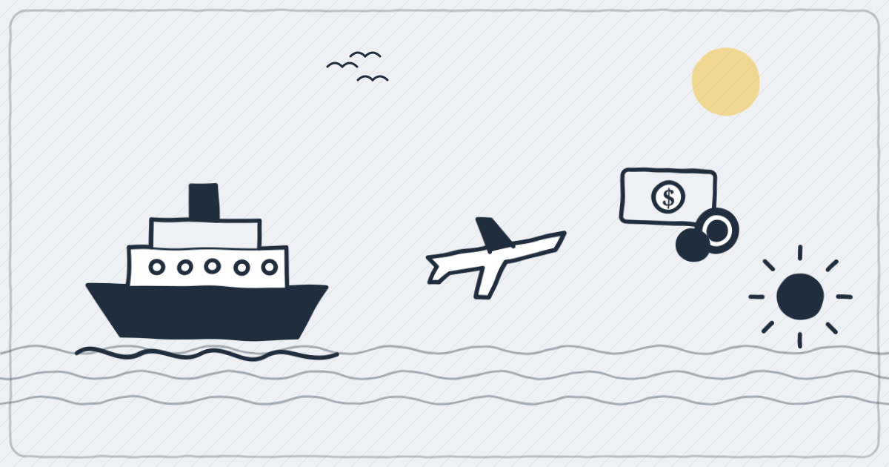

How Much Does a Mediterranean Cruise Cost From Canada?
Budget about C$6,500 to C$11,500 for two people all-in for a 7-night Mediterranean cruise from Canada in an inside cabin, or roughly C$8,000 to C$14,500 with a balcony, at recent prices. The fare is only about a third of that; the flight to Europe, a hotel night before sailing and euro-priced shore days make up the rest.

A 7-night Mediterranean cruise costs a Canadian couple about C$6,500 to C$11,500 all-in for an inside cabin and roughly C$8,000 to C$14,500 with a balcony, at recent prices. The cabin itself is often no dearer than a Caribbean week. What changes the total is everything around it: a transatlantic flight, a hotel night in Barcelona or Rome before you board, and port days priced in euros.
Why does the Mediterranean cost Canadians more than the Caribbean?
Three things, and the fare is not one of them. A return flight to Europe is the biggest: at recent prices it runs C$900 to C$1,900 a person depending on the month and your home airport, against C$400 to C$700 to Florida. The second is the hotel, because an overnight flight lands you the next morning and the sensible plan is to arrive a day early. The third is the shore day: a ship tour from Civitavecchia to Rome means an hour or more on a coach each way plus a guide, and the price reflects it.
The exchange rate adds a quiet fourth. Fares are quoted in US dollars, hotels and excursions in euros, and with the loonie around 1.43 to the US dollar in late November 2026, the exchange rate can move your cruise cost by several hundred dollars between booking and sailing.
What does a 7-night Mediterranean cruise cost a couple all-in?
Per couple, for a standard 7-night western Mediterranean sailing from Barcelona or Civitavecchia on a large-ship line, at recent prices and about C$1.43 to the US dollar, with one hotel night before sailing.
- Cruise fare with taxes and port fees: US$1,500–2,400 (about C$2,150–3,450) inside; US$2,600–4,200 (about C$3,700–6,000) balcony
- Return flights from Canada: C$1,800–3,800 for two, either cabin
- One or two hotel nights before sailing: C$300–900
- Airport, hotel and port transfers: C$120–300
- Daily gratuities for the week: C$320–430
- Drinks without a package: C$300–650
- Shore days, mixed guided and independent: C$500–1,300
- Travel medical and cancellation insurance: C$250–550
- Working total: C$6,500–11,500 inside; C$8,000–14,500 balcony
How much are flights from Canada to Barcelona, Rome or Athens?
Flights set the floor for the whole trip, so start here. Toronto and Montreal have the most choice: Air Canada and Air Transat both fly seasonal nonstops to Rome, Barcelona and Athens, mostly from spring to October, and shoulder-season seat sales can bring a return under C$1,000. Vancouver means a connection in Toronto, Montreal or a European hub and often C$300 to C$500 more. Calgary, Edmonton, Winnipeg and Halifax connect through the east; book the whole journey on one ticket so a late first leg is the airline's problem, not yours. An open-jaw ticket (into Barcelona, home from Rome) costs little more than a return.
Which port is cheapest to reach?
Barcelona, for most Canadians. The airport is 15 to 20 minutes from the cruise terminals, a taxi runs about 35 to 45 euros, and the city has the widest choice of nonstops from Toronto and Montreal. Rome is the opposite: ships use Civitavecchia, 70 kilometres north-west of the city, so you add a taxi or transfer at roughly 120 to 150 euros each way, or a train with a change and a shuttle at the port end. Athens uses Piraeus, about 45 minutes from the airport by taxi at a fixed fare of around 55 to 70 euros depending on the hour.
"Venice" needs a second look: large ships no longer sail into the lagoon, so a cruise sold as Venice usually boards at Trieste or Ravenna, two to three hours away. Check the embarkation port before you book the flight.
Does the time of year change the price much?
More than for almost any other cruise region.
- April and early May: lowest fares and flights, some repositioning sailings; cool mornings, light crowds.
- Late May and June: rising; warm, busy from mid-June.
- July and August: peak, because Canadian and European school holidays overlap; hot inland, 35°C days in Rome and Athens, long queues at the famous sights.
- September: easing; warm sea, thinner crowds, the sweet spot for many.
- October and early November: low again; mild, some rain, short days, the best value for a balcony.
A late-April or October sailing can take C$1,500 or more off a couple's total compared with July.
What will you spend on board and in port in euros?
Gratuities run roughly US$16 to US$21 a person a day depending on the line, charged in US dollars on the North American brands. MSC and Costa run their European ships in euros, so the onboard account works differently from a Royal Caribbean or Princess sailing.
Shore days are where budgets split. Rome, Florence and Pisa cost US$100 to US$200 a person on a ship tour because of the drive from port. Barcelona, Palma, Valletta, Kotor and Marseille are easy on foot or by local bus, and Dubrovnik's old town is a short public bus from the pier. Two guided days and the rest independent lands most couples mid-range.
Do Canadians need ETIAS or any paperwork for a Mediterranean cruise?
No visa, and nothing to apply for yet. Canadians can spend up to 90 days in any 180 in the Schengen area with a passport valid for at least three months beyond the day you leave Europe; six months is the safer margin because some cruise lines ask for it. Since 12 October 2025 the EU's Entry/Exit System has photographed and fingerprinted non-EU visitors at the first Schengen border, with long queues at some airports, so allow extra time on arrival.
ETIAS, the EU's online travel authorisation, was due in the last quarter of 2026, but the EU has pushed that back and will announce a new date several months before launch. When it starts, expect a fee of about 20 euros, validity of three years or until your passport expires, and an online application before you fly. Use the EU's own ETIAS site, not a third-party site that charges more.
How do you keep a Mediterranean cruise under C$8,000 a couple?
- Pick the month first, then the ship. Late April, May, late September or October cut the flight and the hotel at once.
- Price the flight before you deposit the cruise. If the airfare is C$1,800 a person, the trip will not come in cheap whatever the cabin costs.
- Start where your best flight lands. Barcelona round trips suit Toronto and Montreal; a Rome start adds the Civitavecchia transfer twice.
- Book one guided day, not five. Pay for Rome or Florence, walk the rest.
- Use a card with no foreign transaction fee for euros ashore, and read whether a cruise or a land holiday is cheaper if you are weighing the same week in a hotel.
- Buy insurance the day you deposit. Cancellation cover on a C$8,000 trip is worth having, and cruise insurance for Canadians explains what to look for.
If northern Europe is also on your list, compare this budget with a Norwegian fjords cruise from Canada: the flight is similar, the fares are higher and the ports are dearer.
Want this checked for your own sailing? A licensed cruise consultant can price it up and answer questions for free, with no obligation.
Ask a cruise expert →Price the flight, then the cabin
Treat the flight as the main purchase and the cruise as the thing attached to it. Choose a shoulder month, fly into the port city a day early, pay for one or two big days ashore, and a Mediterranean week from Canada lands around C$7,000 to C$9,000 for two at recent prices.
Still wondering?
Is a Mediterranean cruise cheaper than a Caribbean cruise for Canadians?
The cabin usually costs about the same, but the trip does not. A return flight to Rome or Barcelona runs two to three times a flight to Florida, you need at least one hotel night before sailing, and excursions to Rome or Florence cost more than a Caribbean beach day. Expect the whole trip to cost roughly double a Caribbean week.
When is the cheapest time for a Mediterranean cruise from Canada?
Late April, May, October and early November. Fares and airfares both drop outside the summer peak, and the ports are cooler and less crowded. July and August are dearest because Canadian and European school holidays overlap.
Do Canadians need a visa or ETIAS for a Mediterranean cruise?
No visa for stays under 90 days. ETIAS, the EU's planned travel authorisation, no longer has a confirmed launch date after the late-2026 target was pushed back; when it starts it is expected to cost about 20 euros and last three years. Since October 2025 the Entry/Exit System takes your photo and fingerprints at the first Schengen border.